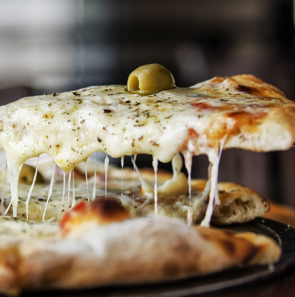

Argentinian Style Pizza
Main Page

A Real Argentinian Pizza
Argentine pizza has a unique and strong personality, its
overflowing cheesy style has nothing to do with its
Italian cousin. Why both flour relatives grew up
differently? There is a historic reason. At the time of
the Great Immigration when the Argentine population
became half Italian, half Spanish, Italians went crazy to
see the Argentinian’s abundance of food! They were used
to the war’s scarcity, but once in Argentina, they started
covering their pizzas with tons of mozzarella,
tomato sauce and every ingredient they could find.
The result: Argentina’s delicious thick-crusted cheesy pizza.
Ingredients and Preparation
Recipe for 2 pizzas, 8 servings each
Dough Ingredients
- 450 grams of 0000 flour
- 270 ml of warm water
- 2 tablespoons of extra virgin olive oil
- 25 grams of fresh yeast
- 1 spoon of sugar
- 1 teaspoon salt
Dough Preparation
- Dissolve the yeast and sugar in the warm water.
- Mix in a bowl with the 0000 flour.
- Add the olive oil and salt.
- On the floured counter, form a bun and knead until a smooth dough is left, folding the dough on itself and rotating it. Separate the dough into two equal buns and leave them covered with a cloth until they double in size.
- Spread two 35 cm diameter pizza pans with olive oil and place the buns by stretching them with a rolling pin towards the edges, which should be thicker.
- Leave them covered and cook for 30 minutes in a warm environment.
Sauce Ingredients
- 6 peeled perita tomatoes
- 2 tablespoons of extra virgin olive oil
- 1 pinch of oregano
- 1 pinch of ground white pepper
- 1 pinch of salt
- 1 clove garlic
Sauce Preparation
- Process the tomatoes, garlic, olive oil, salt, pepper and oregano.
- Warm in a container over low heat.
- Spread the sauce from the inside out in a spiral shape over the leavened dough with a ladle and turning the pizza maker.
- Meanwhile go preheating the oven to maximum temperature (250 C).
Final Assembly
- Distribute 600 grams mozzarella cut into strips or dice over the pizzas evenly leaving a 2 cm border
- Place 20 pitted green olives, drizzle with 1 tablespoon of olive oil and put in the oven for approximately 25 minutes.
- Rotate the pizzas after 15 minutes for a more even cooking.
- Top with slices of fresh tomatoes or any other "topping".